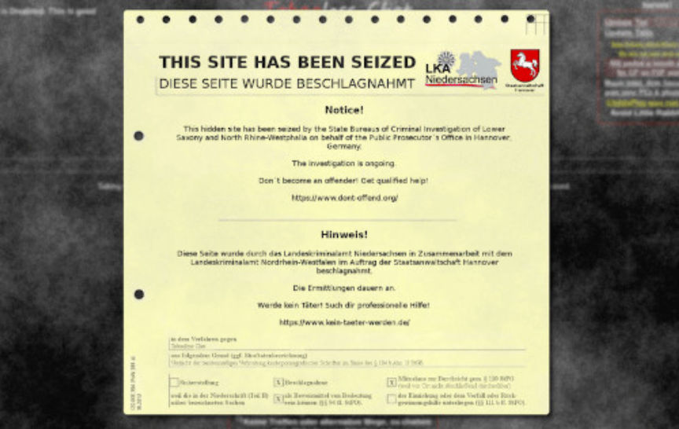
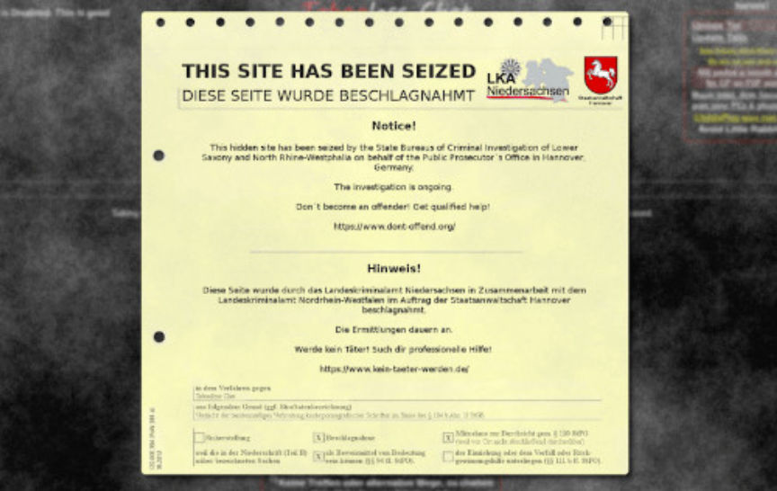

German Police Bust Darknet Child Abuse Site
~2 min read | Published on 2018-04-15, tagged Child-Abuse, Website using 479 words.
German authorities have somewhat of skill when it comes to taking down darknet child abuse forums and chatrooms. The German Federal Criminal Police Office recently took down Elysium. Now, Hanover police and the Hanover Public Prosecutor took down a massive child abuse chatroom with tens of thousands of members. They have also arrested two administrators.
The investigation followed a tip Hanover police received in 2017. A member of the chatroom called “Tabooless Chat” accidentally leaked his information in the chat and an unknown third party—a civilian—sent that information to Hanover authorities. A lengthy investigation followed.
On April 4, 2018, the Tabooless Chat link got pulled off the index of child abuse sites that many pedophiles use to access sites on the darknet. Roughly one well later, a seizure banner surfaced. A new seizure banner. We have seen the seizure banner from Elysium and Germany in the Deepweb.

This banner told visitors of the site that they could get help with their issue. Many pedophiles may not consider their interest in children an issue, but in some cases, the person tells the courtroom that they used drugs to help control the urges. German authorities believe that therapy and rehabilitation could help those with pedophilia.
Not knowing enough about the topic, my insight is not of any use.
After they pulled the chatroom offline, German Police arrested the site’s owner and one of the site’s technical administrators. They are looking for other members and believe some live in the United States.
PRESS RELEASE OF THE PUBLIC PROSECUTOR HANOVER FROM 13.04.2018
Due to extensive police and prosecutorial investigations since spring 2017, two suspects aged 45 and 50 years were arrested in November 2017 and March 2018, which are suspected, between 2016 and 2018, an Internet forum serving to exchange child pornography in the Darknet operated or moderated to have enabled thousands of users to watch and exchange child and youth pornographic writings in the form of image and video files. In addition, meetings to abuse children have been arranged among the chat participants.
The participants were given access to the internationally used forum after previous investigations through the installation of a so-called TOR browser, which could be loaded and installed for everyone via a variety of Internet sites. The accused, one of whom is alleged to have transmitted child pornography material to third parties, should have been given assistance in using the forum as so-called administrators of the chat, as well as paying attention to compliance with security and behavioral guidelines. The 45-year-old accused should also have been the technical operator of the now deactivated chat.
The accused have given their participation in their police interrogation and are currently in remand. The case against the 50-year-old accused has already been handed over to Hechingen, the public prosecutor responsible for his place of residence.
Investigations to the participants of the Internet forum as well as to other, as yet unknown administrators of the chat are ongoing.
The investigation followed a tip Hanover police received in 2017. A member of the chatroom called “Tabooless Chat” accidentally leaked his information in the chat and an unknown third party—a civilian—sent that information to Hanover authorities. A lengthy investigation followed.
On April 4, 2018, the Tabooless Chat link got pulled off the index of child abuse sites that many pedophiles use to access sites on the darknet. Roughly one well later, a seizure banner surfaced. A new seizure banner. We have seen the seizure banner from Elysium and Germany in the Deepweb.

Tabooless Chat Seizure Banner
This banner told visitors of the site that they could get help with their issue. Many pedophiles may not consider their interest in children an issue, but in some cases, the person tells the courtroom that they used drugs to help control the urges. German authorities believe that therapy and rehabilitation could help those with pedophilia.
Not knowing enough about the topic, my insight is not of any use.
After they pulled the chatroom offline, German Police arrested the site’s owner and one of the site’s technical administrators. They are looking for other members and believe some live in the United States.
PRESS RELEASE OF THE PUBLIC PROSECUTOR HANOVER FROM 13.04.2018
Due to extensive police and prosecutorial investigations since spring 2017, two suspects aged 45 and 50 years were arrested in November 2017 and March 2018, which are suspected, between 2016 and 2018, an Internet forum serving to exchange child pornography in the Darknet operated or moderated to have enabled thousands of users to watch and exchange child and youth pornographic writings in the form of image and video files. In addition, meetings to abuse children have been arranged among the chat participants.
The participants were given access to the internationally used forum after previous investigations through the installation of a so-called TOR browser, which could be loaded and installed for everyone via a variety of Internet sites. The accused, one of whom is alleged to have transmitted child pornography material to third parties, should have been given assistance in using the forum as so-called administrators of the chat, as well as paying attention to compliance with security and behavioral guidelines. The 45-year-old accused should also have been the technical operator of the now deactivated chat.
The accused have given their participation in their police interrogation and are currently in remand. The case against the 50-year-old accused has already been handed over to Hechingen, the public prosecutor responsible for his place of residence.
Investigations to the participants of the Internet forum as well as to other, as yet unknown administrators of the chat are ongoing.